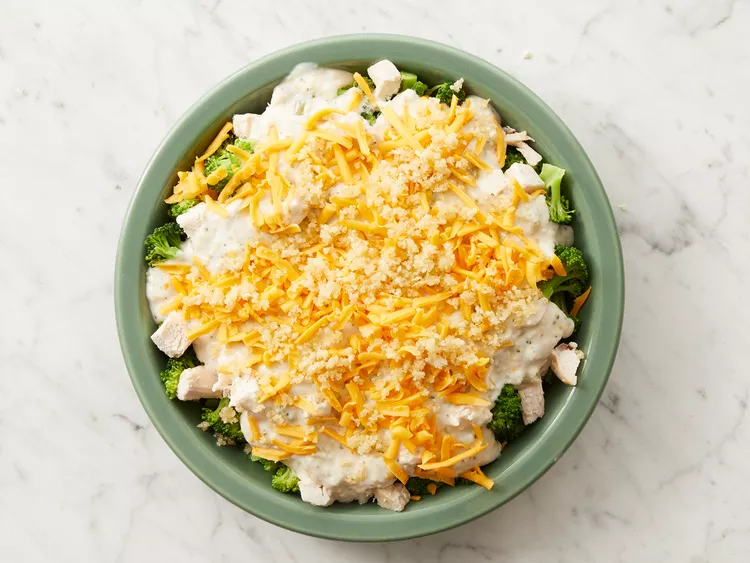

Chicken Divan

Description
Looking for a hearty, pantry-friendly chicken casserole that doesn't disappoint? We've got you covered with a cheesy bake that boasts hundreds of 5-star reviews. Broccoli Chicken Divan is an old-fashioned delight bursting with succulent chicken, broccoli, and buttery breadcrumbs.
- 1 pound chopped fresh broccoli
- 1 & 1/2 cips cubed, cooked chicken meat
- 1 (10.5 ounch) can condensed cream of broccoli soup
- 1/3 cup milk
- 1/2 cup shredded Cheddar cheese
- 2 tablespoons dried bread crumbs
- 1 tablesppon butter, melted
- Prehead the oven to 450 degrees F (230 degress C).
- Place broccoli in saucepan with enough water to cover. Bring to a boil and cook until tender, about 5 minutes. Drain.
- Place the cooked broccoli in a 9 inch pie plate. Top with the chicken. In a bowl, mix the soup and milk, and pour over the chicken. Sprinkle with cheddar cheese. Mix the melted butter with the bread crumbs, and sprinkle over the cheese.
- Bake in the preheated oven until casserole is bubbly and the top is golden brow, about 15 minutes.